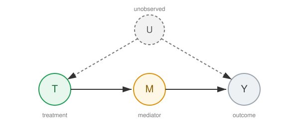

Identification Strategies#
The previous sections established when a causal effect can be recovered from observational data: the core assumptions (Assumptions) and the graphical criteria for selecting a valid adjustment set (Graphical Causal Models). The central question in observational causal inference is: which variables should we condition on to identify the causal effect of \(T\) on \(Y\)?
This section organises the main identification strategies — the structural arguments that re-express a causal estimand purely in terms of the observed data distribution, before any particular estimator is chosen.
Each strategy trades on a different identifying assumption. The choice is dictated by the causal structure encoded in the DAG: which variables are observed, where the confounding enters, and whether a suitable instrument or mediator is available.
Strategies at a Glance#
Strategy |
Identifying assumption |
Handles |
Estimation (see Causal Inference) |
|---|---|---|---|
Back-door adjustment |
All confounders of \((T, Y)\) are observed |
Measured confounding |
|
Front-door adjustment |
An observed mediator intercepts all \(T \rightarrow Y\) paths |
Unmeasured confounding of \((T, Y)\) |
|
Instrumental variables |
An instrument affects \(Y\) only through \(T\) |
Unmeasured confounding |
Back-door Adjustment#
When the observed covariates \(X\) satisfy the Criterion 1, the causal effect is identified by the adjustment formula
This is the workhorse identification strategy and underpins propensity-score and regression-based estimators in Causal Inference.
The following criteria provide graphical answers (Shalizi, 2025, §21.3–21.4).
The Backdoor Criterion#
Criterion 1 (Backdoor Criterion)
A set of variables \(Z\) satisfies the backdoor criterion relative to the ordered pair \((T, Y)\) in a DAG \(\mathcal{G}\) if:
No node in \(Z\) is a descendant of \(T\), and
\(Z\) blocks every path between \(T\) and \(Y\) that contains an arrow into \(T\) (i.e. every “backdoor path”).
If \(Z\) satisfies the backdoor criterion, then the causal effect of \(T\) on \(Y\) is identifiable and given by the adjustment formula:
The adjustment formula converts the interventional distribution \(P(Y \mid \text{do}(T=t))\) into a quantity computable from observational data. This is precisely the bridge between causal and statistical estimands discussed in Assumption 4 (Rosenbaum & Rubin, 1983).
Algorithm 1 (Backdoor Criterion Check)
Input: DAG \(\mathcal{G}\), treatment \(T\), outcome \(Y\), candidate adjustment set \(Z\)
Output: True if \(Z\) satisfies the backdoor criterion, False otherwise
Check descendant condition: For each \(z_i \in Z\):
If \(z_i \in \text{Descendants}(T)\) in \(\mathcal{G}\), return
False
Enumerate backdoor paths: Find all paths between \(T\) and \(Y\) that have an arrow into \(T\) (i.e. paths of the form \(T \leftarrow \cdots\, Y\) or \(T \leftarrow \cdots \rightarrow Y\))
Check blocking: For each backdoor path \(p\):
If \(p\) is not blocked by \(Z\) (applying the \(d\)-separation rules from Definition 6), return
False
Return
True
Example 2 (Applying the Backdoor Criterion)
Consider the DAG:
\(F \rightarrow T, \quad F \rightarrow Y, \quad T \rightarrow Y\)
Candidate \(Z = \{F\}\): \(F\) is not a descendant of \(T\) ✓. The only backdoor path is \(T \leftarrow F \rightarrow Y\), which is blocked by conditioning on \(F\) ✓. The backdoor criterion is satisfied.
Candidate \(Z = \emptyset\): The backdoor path \(T \leftarrow F \rightarrow Y\) is not blocked ✗. The criterion fails.
Front-door Adjustment#
When confounding between \(T\) and \(Y\) is unobserved but an observed mediator \(M\) intercepts every directed path from \(T\) to \(Y\), the frontdoor-criterion identifies the effect through a two-stage decomposition that avoids conditioning on the unobserved confounder.
The Frontdoor Criterion#
When all backdoor paths are blocked by unobserved confounders, the backdoor criterion cannot be applied. The frontdoor criterion provides an alternative identification strategy through an observed mediator (Shalizi, 2025, §21.4).
Criterion 2 (Frontdoor Criterion)
:class: dropdown :label: frontdoor-criterion
A set of variables \(M\) satisfies the frontdoor criterion relative to \((T, Y)\) in a DAG \(\mathcal{G}\) if:
\(M\) intercepts all directed paths from \(T\) to \(Y\) (i.e. every causal path from \(T\) to \(Y\) passes through some \(m \in M\)),
There is no unblocked backdoor path from \(T\) to \(M\), and
All backdoor paths from \(M\) to \(Y\) are blocked by \(T\).
If \(M\) satisfies the frontdoor criterion, the causal effect is identified by:
Algorithm 2 (Frontdoor Criterion Check)
Input: DAG \(\mathcal{G}\), treatment \(T\), outcome \(Y\), candidate mediator set \(M\)
Output: True if \(M\) satisfies the frontdoor criterion, False otherwise
Check path interception: For each directed path \(p\) from \(T\) to \(Y\):
If \(p\) does not pass through any \(m_i \in M\), return
False
Check no backdoor \(T \to M\): For each \(m_i \in M\):
If there exists an unblocked backdoor path from \(T\) to \(m_i\) (not through \(Y\)), return
False
Check backdoor \(M \to Y\) blocked by \(T\): For each \(m_i \in M\):
If there exists a backdoor path from \(m_i\) to \(Y\) that is not blocked by \(\{T\}\), return
False
Return
True
Example 3 (Frontdoor Criterion with Unobserved Confounding)
Consider the DAG where \(U\) is unobserved:
\(U \rightarrow T, \quad U \rightarrow Y, \quad T \rightarrow M, \quad M \rightarrow Y\)
The backdoor criterion fails because we cannot condition on \(U\).
Candidate \(M = \{M\}\): All causal paths from \(T\) to \(Y\) go through \(M\) ✓. No backdoor path from \(T\) to \(M\) (since \(U \rightarrow T\) and \(U \rightarrow Y\), but no path \(T \leftarrow \cdots M\) bypassing the direct edge) ✓. The backdoor path from \(M\) to \(Y\) through \(U\) is \(M \leftarrow T \leftarrow U \rightarrow Y\), which is blocked by \(T\) ✓. The frontdoor criterion is satisfied.
{kind=link}

Fig. 6 The frontdoor setting: the unobserved confounder \(U\) (dashed) blocks the backdoor criterion, but the observed mediator \(M\) intercepts all directed paths from \(T\) to \(Y\), enabling identification.#
Comparison of Criteria#
Backdoor Criterion |
Frontdoor Criterion |
|
|---|---|---|
Requires |
Observed confounders |
Observed mediator |
Blocks |
Non-causal (backdoor) paths |
Uses causal path through mediator |
Fails when |
Confounders are unobserved |
No suitable mediator exists |
Adjusts for |
Common causes \(F\) |
Mediator \(M\) via two-step identification |
Causal Discovery#
Given observational data, can we learn the DAG rather than assuming it? Causal discovery algorithms attempt to infer causal structure from conditional independence relations in the data (Shalizi, 2025, Ch. 22).
Markov Equivalence#
Definition 8 (Markov Equivalence Class)
Two DAGs are Markov equivalent if they encode exactly the same set of \(d\)-separation (conditional independence) statements. DAGs in the same equivalence class share the same skeleton (undirected edges) and the same set of v-structures (collider patterns \(X \rightarrow C \leftarrow Y\) where \(X\) and \(Y\) are not adjacent).
Observational data alone can only identify the DAG up to its Markov equivalence class. Orienting all edges requires either interventional data or additional assumptions (Shalizi, 2025, §22.3).
The SGS Algorithm#
The SGS algorithm (Spirtes, Glymour & Scheines, 1993) is a constraint-based procedure that recovers the Markov equivalence class from conditional independence tests. The following pseudo-code is adapted from Shalizi (2025, §22.7).
Algorithm 3 (SGS Algorithm)
Input: Set of variables \(V\), conditional independence oracle (or statistical test)
Output: Partially directed graph (CPDAG) representing the Markov equivalence class
Phase I — Skeleton Recovery:
Start with the complete undirected graph on \(V\)
For each pair of nodes \((X, Y)\) with \(X \neq Y\):
For each subset \(S \subseteq V \setminus \{X, Y\}\) (in order of increasing size):
Test whether \(X \perp\!\!\!\perp Y \mid S\)
If independent: remove the edge \(X - Y\) and record \(S\) as the separating set \(\text{Sep}(X,Y) \leftarrow S\)
Break (move to next pair)
Phase II — Orient V-Structures:
For each unshielded triple \((X, Z, Y)\) — where \(X - Z\) and \(Z - Y\) but \(X\) and \(Y\) are not adjacent:
If \(Z \notin \text{Sep}(X, Y)\): orient as \(X \rightarrow Z \leftarrow Y\) (v-structure / collider)
Phase III — Orient Remaining Edges:
Repeatedly apply the following orientation rules until no more edges can be oriented:
Acyclicity: If \(X \rightarrow Z - Y\) and \(X\) and \(Y\) are not adjacent, orient as \(Z \rightarrow Y\)
No new v-structures: If there is a directed path \(X \rightarrow \cdots \rightarrow Y\) and an undirected edge \(X - Y\), orient as \(X \rightarrow Y\)
The SGS algorithm is correct under the assumptions of the Causal Markov Condition (Property 1) and faithfulness (Assumption 5). In practice, the PC algorithm (a computationally efficient variant) is more commonly used: it restricts the conditioning sets in Phase I to neighbours of \(X\) or \(Y\) in the current skeleton, greatly reducing the number of tests (Shalizi, 2025, §22.4).
Remark 1
Causal discovery from observational data has fundamental limitations:
It can only recover the Markov equivalence class, not the unique DAG.
It requires faithfulness, which can be violated when causal effects cancel.
It assumes no latent confounders (for the basic SGS/PC algorithms; extensions like FCI handle latent variables).
Statistical tests for conditional independence have limited power in finite samples, especially with many conditioning variables.
Instrumental Variables#
When no admissible adjustment set exists, an instrument \(Z\) — a source of exogenous variation in \(T\) that affects \(Y\) only through \(T\) — can identify a local causal effect. The instrumental-variable estimator and its two-stage least-squares implementation are developed in Regression Methods.
Note
This section frames identification only. How to estimate each identified quantity from a finite sample — with propensity scores, regression, machine-learning, tree-based, or Bayesian methods — is the subject of Causal Inference, and the robustness of the underlying assumptions is examined in Validation and Sensitivity Analysis.